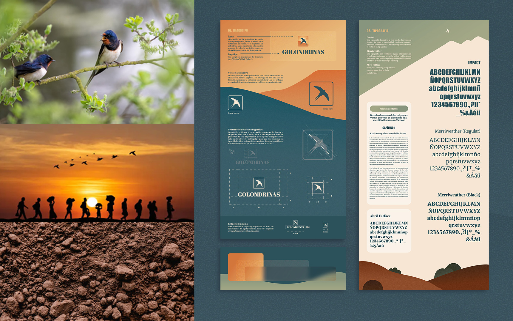
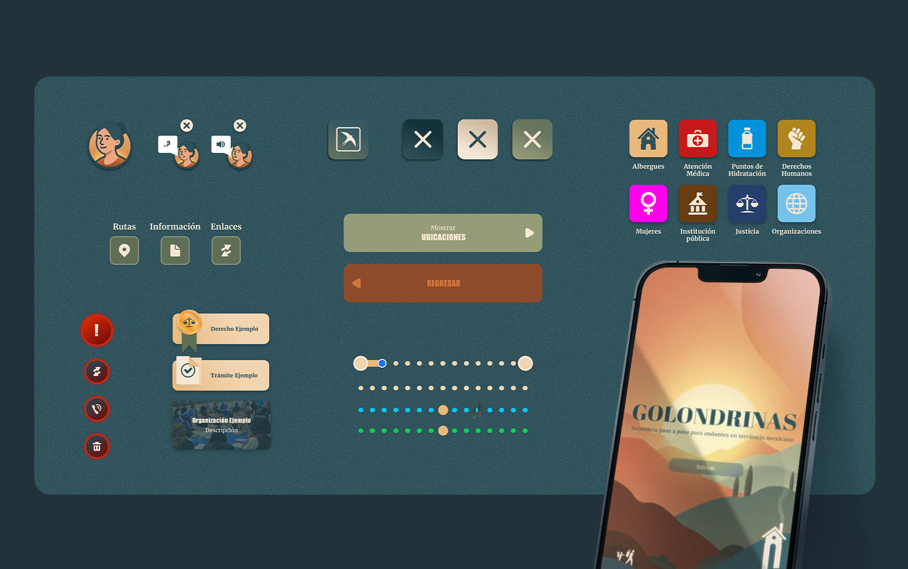
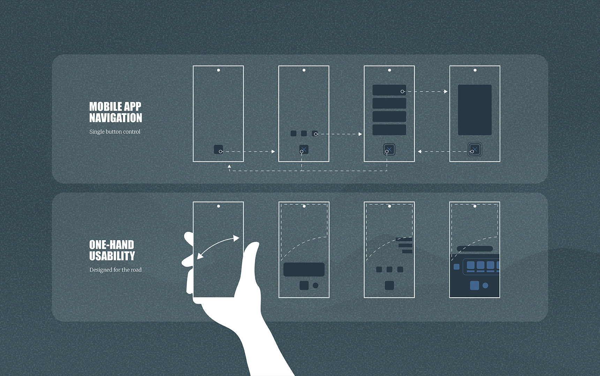
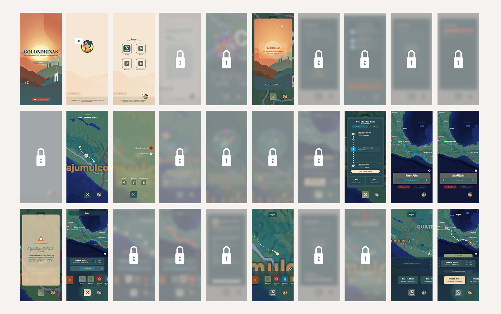
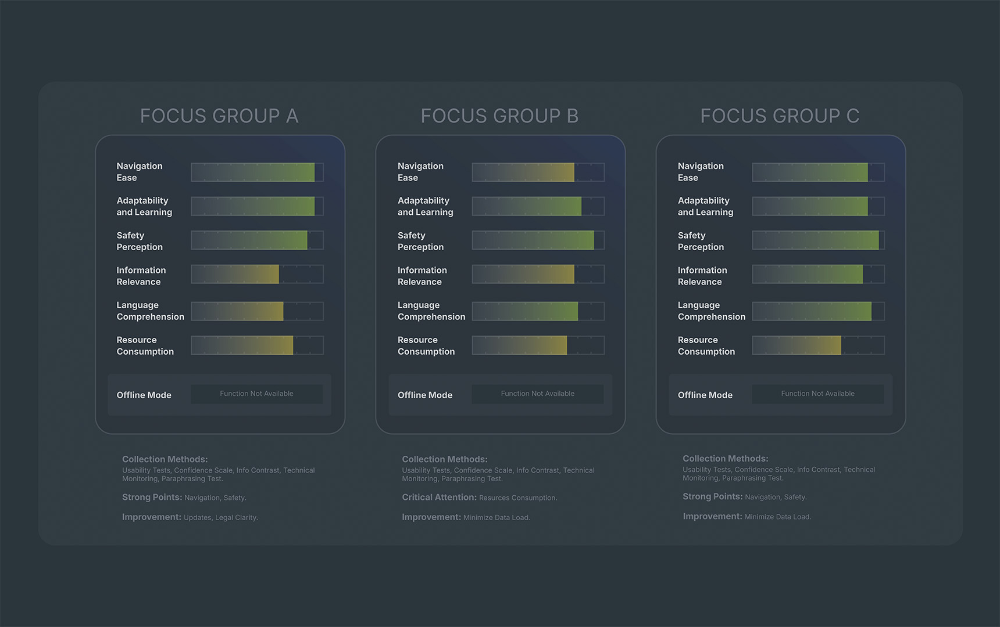

Golondrinas
(Swallows)
Saved the best for last? I appreciate your thorough
review of my work.
...
"Golondrinas" (Swallows in spanish) is a humanitarian platform designed
to assist individuals in transit through Mexico by providing the essential tools for a safe, legal,
and dignified journey. Available via web for shelters and support centers, and as a mobile app for
users on the move, the project provides critical information to ensure a controlled and informed
experience. It does not seek to encourage migration, but rather to acknowledge its reality and
prioritize the human dignity of those on the path.
"Golondrinas" (Swallows in spanish) is a humanitarian
platform designed
to assist individuals in transit through Mexico by providing the essential tools for a safe, legal,
and dignified journey. Available via web for shelters and support centers, and as a mobile app for
users on the move, the project provides critical information to ensure a controlled and informed
experience. It does not seek to encourage migration, but rather to acknowledge its reality and
prioritize the human dignity of those on the path.
Great choice to start with.
...
Year: 2025
Skills: UX/UI
Design, Product Design, Animation, User Journeys, Branding, Storytelling
Role: Senior Designer and UX Tester
Year: 2025
Skills: UX/UI
Design, Product Design, Animation, User Journeys, Branding, Storytelling
Role: Senior Designer and UX Tester
(The following video provides an illustrative introduction to the
project)
Inspired by nature and its connection to the earth, Golondrinas uses the imagery of the migratory bird
to represent the universal search for better living conditions. The project employs a playful,
lighthearted graphic style designed to connect with the user’s inner child, providing a necessary mental
relief from a harsh reality.
Safety is imperative, as individuals in transit through Mexico
face constant threats of violence, theft, and extortion. The platform prioritizes immediate access to
verified information regarding secure routes, required documentation, and trusted aid
organizations.



The design is built around the user's physical environment. The mobile interface features a navigation scheme optimized for one-handed thumb use, allowing for full control while walking or carrying belongings. To assist those with visual impairments or literacy challenges (and to facilitate heads-up navigation), a text-to-speech narrator is integrated. Additionally, the app allows users to link with others to monitor progress and includes an emergency button for instant alerts during high-risk situations.

Certain screens are partially hidden to respect client confidentiality.
Images may unlock when the content is no longer sensitive.


